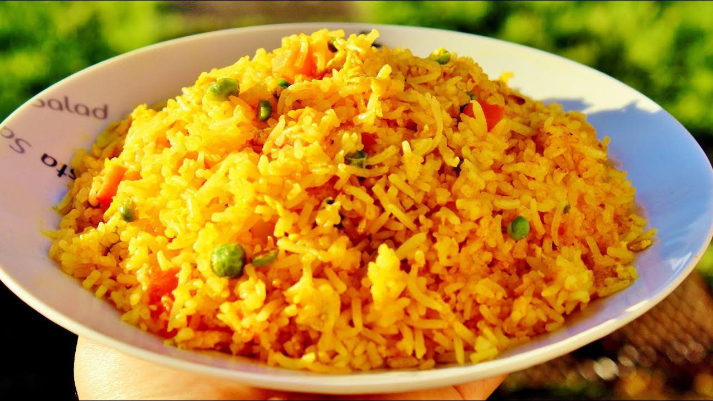

Leftover Rice Mixed Fried Rice

Ingredients:
- Leftover Rice
- Chopped Onions
- Eggs
- Sausage
- Peas, carrots, broccoli or vegtables of your choice
- Garlic
- Tomatoes
- Tumeric
- Cumin powder
- Masala Powder
- Salt and pepper
- Butter or choice of cooking oil
- Parsley or scallions
Steps:
- Heat up some cooking oil in a pan.
- Add chopped onions and garlic and cook in medium heat until brown
- Add your vegetables and sautee them until cooked.
- Add salt, pepper, tumeric, cumin powder and masala powder andd mix well.
- Move the cooked vegetables towards the edges of the pan and add some oil in the middle.
- Crack two eggs in a bowl and whisk them well with salt and pepper.
- Pour the eggs into middle of the pan and scramble them.
- Once they are almost done, mix it well with the vegtables and cook for few minutes.
- Add finely chopped tomatoes and cook until soft.
- Break up the rice and add to the pan.
- Mix well and cook on medium heat until rice starts to brown.
- Repeat step number 3 according to taste.
- Serve in a bowl and top off with scallions or parsley and enjoy!